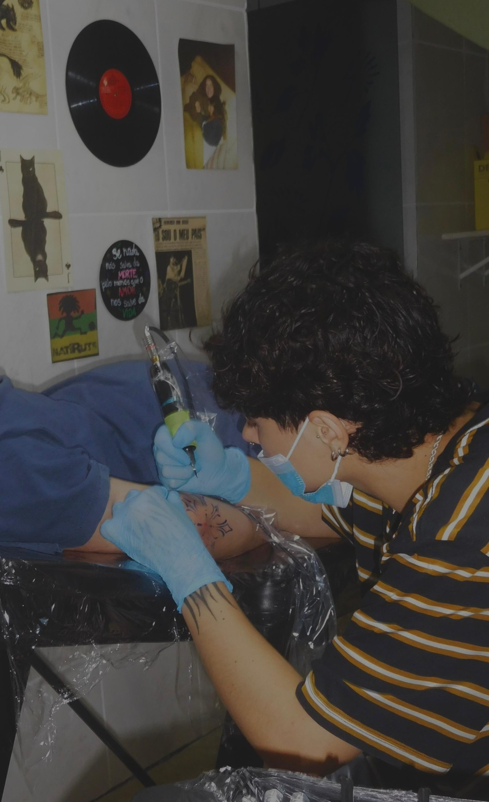

Tatuadora · Belo Horizonte
Arte que
fica na pele.
Tatuagem autoral, feita com cuidado, atitude e biossegurança. 3 anos transformando ideias em traço.
↓ Role
Sobre mim.
Me chamo Ana Luiza, tenho 19 anos e, desde que me entendo por gente, a arte faz parte de mim.
Sempre fui muito plural. Amo música, toco alguns instrumentos, componho e canto. Além disso, desde criança amo desenhar e sempre tive vontade de deixar minha arte registrada, marcada na vida das pessoas.
Aos 16 anos, me encontrei na tatuagem. Acredito que por amar o desenho, mas também por amar ouvir as histórias de cada cliente, entender por que aquela arte foi escolhida para se tornar eterna e, principalmente, pela incrível sensação de saber que, mesmo que minimamente, contribuí para transformar a vida, a história e a autoestima de alguém.
Mas, para mim, tatuar também é cuidar. Por isso, prezo pela biossegurança em cada etapa do processo, desde a preparação do ambiente e dos materiais até os cuidados durante e após a tatuagem. Acredito que uma experiência bonita precisa, antes de tudo, ser segura, responsável e respeitosa.
Por isso, te convido a ser “rabiscado” por mim — um apelido carinhoso que dei ao ato de tatuar.
Tatuando comigo, o processo vai muito além de um desenho na pele precedido por uma dor. O rabisco vira história, risada, arte, autoestima e, acima de tudo, uma experiência feita com cuidado.
Clientes
O que dizem
sou super suspeita pra falar mas amo suas tattoos, vc tem o traço lindo e sempre acerta nas loucuras q eu peço, amo dms e recomendo pra td mundo!!!!
ana, você é uma profissional extremamente atenciosa e adorável, além de rabiscar bem demais
ana querida, que trabalho maravilhoso que vc fez! transformou completamente os traços tristes que já estavam essas tatuagens. Deu uma vida nova pra elas e por isso sou mto grata! Como sempre, mto bom tatuar com vc
muito feliz em tatuar com vc, ana! foi a unica que conseguiu seguir o projeto do coelho a risca do jeitinho que eu queria e fiquei tao mas tao feliz com os resultados!!!
Realmente acho seu trabalho incrível!!!
Agendamento
Como funciona
Mande a ideia
Chame no WhatsApp com sua referência, tamanho e local do corpo.
Receba o orçamento
Eu analiso e envio o valor e o tempo estimado da sessão.
Pague o sinal
O sinal garante seu horário e o início da criação do desenho.
Marque a data
Escolhemos juntas o melhor dia e horário para você.
Faça a tattoo
No dia, ajustamos o desenho com você e tatuamos com calma.
Dúvidas
Perguntas frequentes
Dói muito?
Depende do local do corpo e da sua sensibilidade. Regiões com mais osso ou pouca gordura costumam doer mais. Faço pausas sempre que precisar e vou te orientando durante a sessão.
Quanto custa?
O valor depende do tamanho, do nível de detalhe e do local da tatuagem. Me mande sua ideia no WhatsApp que envio o orçamento sem compromisso.
Precisa de sinal?
Sim. O sinal reserva o seu horário e cobre a criação do desenho. Ele é abatido do valor final da tatuagem.
Menor de idade pode tatuar?
Somente com autorização e presença de um responsável legal, com documento. Para menores de 16 anos não realizo o procedimento.
Faz cobertura?
Depende da tatuagem antiga: tamanho, cor e escuro do traço. Envie uma foto dela no WhatsApp e eu avalio se é possível e qual a melhor solução.
Antes da sessão
Cuidados pré-tattoo
- Hidrate a pele nos dias anteriores.
- Durma bem na noite anterior.
- Alimente-se bem antes da sessão.
- Beba bastante água.
- Evite sol e queimaduras na região a ser tatuada.
- Evite álcool e outras substâncias antes da sessão.
- Avise a tatuadora sobre alergias, condições de saúde e medicamentos relevantes.
- Vá com roupas confortáveis que facilitem o acesso à região.
Depois da sessão
Cuidados pós-tattoo
Ao sair da sessão
Retire o plástico no tempo indicado pela tatuadora.
Hidratação
Após 2 dias, comece a aplicar o creme ou a pomada hidratante recomendada.
Limpeza
Nos primeiros dias, é normal a tatuagem liberar um pouco de plasma. Quando a região estiver com aspecto grudento, lave delicadamente com sabonete líquido neutro e seque com papel-toalha, dando leves batidinhas, sem esfregar.
Coceira e descamação
Não coce, não esfregue e não arranque as casquinhas! Se a coceira incomodar, dê leves batidinhas com a mão limpa e mantenha a hidratação em dia.
Alimentação
Evite exageros no consumo de álcool e mantenha uma alimentação equilibrada durante a cicatrização. Não é necessário cortar alimentos específicos, como carne de porco e chocolate, sem uma orientação individualizada.
Lazer
Evite piscina, praia, cachoeira e outros locais de imersão até a cicatrização completa — geralmente, por cerca de 2 a 4 semanas.
Sol e protetor solar
Evite a exposição solar direta durante a cicatrização. Use protetor solar na região somente após a pele estar completamente cicatrizada.
Lembre-se: cada pele tem seu tempo de cicatrização! Vermelhidão crescente, dor que piora, pus ou febre são sinais de alerta e precisam de avaliação médica.
Vamos começar
Seu próximo
rabisco.
Conte sua ideia e peça seu orçamento. Respondo com todo carinho!
Chamar no WhatsAppLocal de atendimento
Rua do Calvário, 208 — São Marcos, Belo Horizonte/MG
Ver no mapa